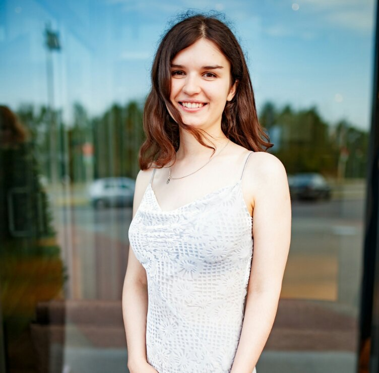

Anastasia Kvachenok
Junior Front-end Developer
Contact information:
- phone: +1234567890
- email: nastya@example.com
- github: https://github.com/NastyaKvachenok
- discord: Asya (@NastyaKvachenok)
- location: Tbilisi, Georgia
About me:
I am a beginner Frontend Developer. I am currently gaining theoretical and practical skills in frontend development, which I want to apply in commercial development in the future. I am persistent, I love to delve deeply into the topic that interests me and get new information. I have an analytical mind and I love to solve complex problems.In addition to interest, I have a desire to be useful to others with my skills and abilities. I am ready for long, meaningful and productive work, and I hope this will help me master the profession of Frontend Developer and get the position of Junior Frontend Developer, and then successfully work on it and continue my professional path.
Skills:
- JavaScript
- HTML
- CSS
- Git
- VScode
Code example:
function isPalindrome(line) {
line = String(line);
let lineReverse = line.split('').reverse().join('');
return line == lineReverse;
}
My progects:
My CVEducation:
- Higher education (Belarusian State University, biologist)
- Rolling Scopes Scholl (JavaScript/Frontend, in progress)
English level:
А2 (pre-intermediate)